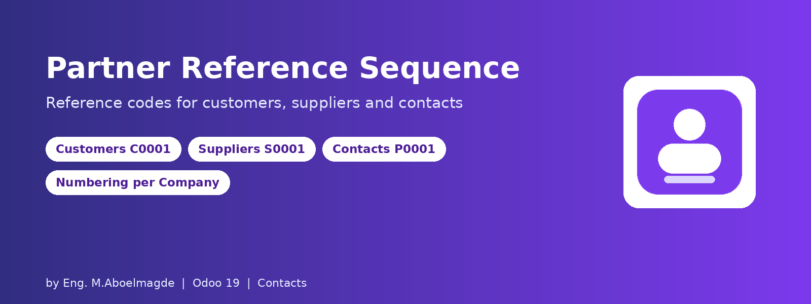
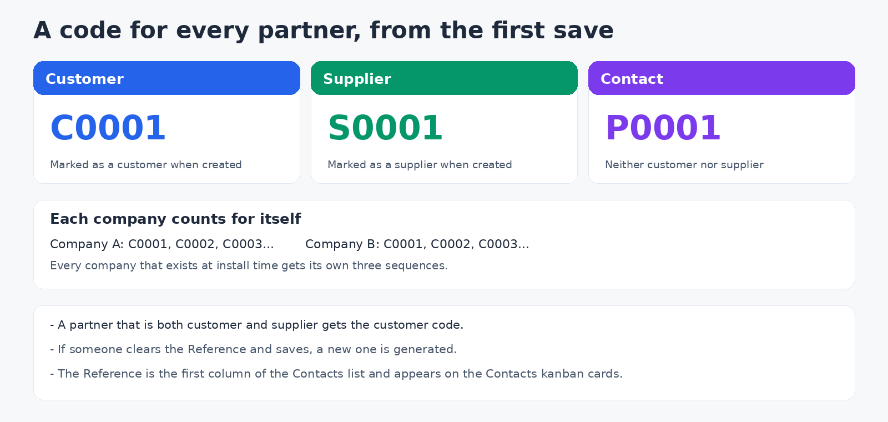
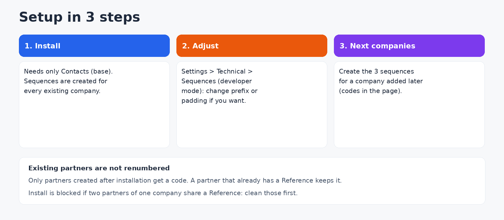

A reference code for every customer, supplier and contact
Odoo has a Reference field on partners, but nobody fills it and it is hidden in the lists. This module numbers partners automatically (C0001 for customers, S0001 for suppliers, P0001 for other contacts), keeps the numbering separate for each company, and shows the Reference where people look for it.
How it works

- Three sequences: Customer Reference (prefix C), Supplier Reference (prefix S) and Contact Reference (prefix P), four digits, no gaps.
- Which one is used depends on whether the partner is marked as a customer or a supplier at the moment it is created: from the customer or vendor screens, an import or the API. A partner that is both gets the customer code. A partner created with neither mark gets the contact code. The prefix is not changed afterwards.
- Only when empty: if you type a Reference yourself, it is kept. If someone clears it and saves, a new one is generated, so a partner never stays without a code.
- Per company: on installation every existing company gets its own set of three sequences, so each company counts from 0001.
- Visible: the Reference is the first column of the Contacts list (it can be hidden from the column selector) and a line with a # icon on the Contacts kanban cards.
- Unique per company: a Reference cannot be repeated inside a company. Partners without a company are not restricted.
- Every partner record is numbered, including the contact people created under a company.
Configuration guide

Step 1: Install
The module needs only the Contacts base. No settings screen and no extra libraries. The sequences are created automatically: one global set as a fallback, and one set for each company that exists at that time.
Step 2: Adjust the format (optional)
Activate developer mode and open Settings > Technical > Sequences. Search for "Reference" and edit the prefix, the size or the next number of the sequence of each company.
Step 3: Companies created later
A company added after installation does not get its own sequences automatically and uses the global ones. To give it independent numbering, create three sequences for that company with these codes:
| Name | Code | Prefix | Size | Implementation |
|---|
| Customer Reference | partner.customer.seq | C | 4 | No gap |
| Supplier Reference | partner.supplier.seq | S | 4 | No gap |
| Contact Reference | partner.contact.seq | P | 4 | No gap |
Who can do what
| Action | Who |
|---|
| Create partners and receive references | Every user who can create partners |
| Edit a Reference by hand | Every user who can edit partners |
| Create and edit the sequences | Administrators (Technical settings) |
Good to know
- Existing partners are not renumbered. Only partners created after installation get a code.
- Install on an existing database: if two partners of the same company already share a Reference, the installation stops. Clean the duplicates first.
- The uniqueness rule applies to partners that have a company set.
Technical details
- Odoo 19.0, Community and Enterprise. Depends only on base.
- License: Odoo Proprietary License v1.0 (OPL-1).
- Extends res.partner, adds three global sequences plus company sequences created by an installation hook.
Frequently asked questions
Why did my customer get a P code? It was created without being marked as a customer or supplier, for example from the Contacts app. The code is decided at creation.
Can I change the prefix? Yes, in the sequences under Settings > Technical.
Will old customers get a code? No. Only partners created after the installation are numbered.
Support
Bug-fix updates are included. Installation, configuration and customization support: Eng. M.Aboelmagde (YouTube: Odoo Lab, @odoolab).